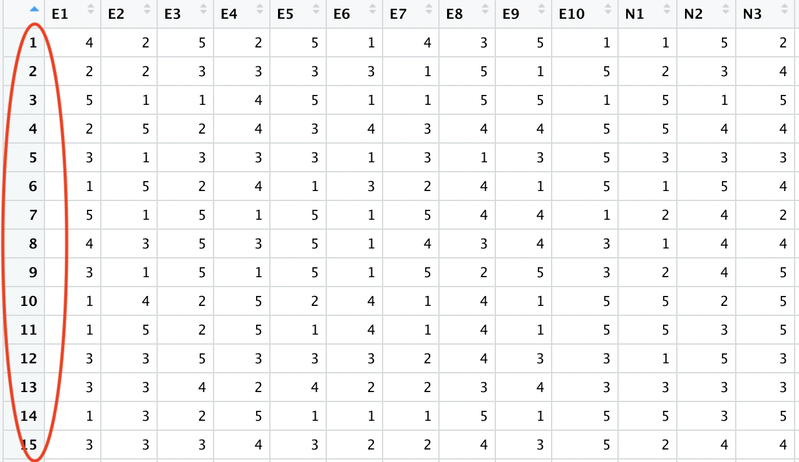

Dane
Co to są dane?
- Informacje wyrażone w pewnym języku (Encyklopedia PWN)
- Fakty, liczby, na których można się oprzeć w wywodach (SJP PWN)
- Informacje przetwarzane przez komputer (SJP PWN)
Dane mogą być ustrukturyzowane albo nieustrukturyzowane
To są dane

To są dane
Najpierw zeszedłem na ulicę
schodami,
ach, wyobraźcie sobie,
schodami.
Potem znajomi nieznajomych
mnie mijali, a ja ich.
Żałujcie,
żeście nie widzieli,
jak ludzie chodzą,
żałujcie!
Miron Białoszewski, Ballada o zejściu do sklepu
Wstąpiłem do zupełnego sklepu;
paliły się lampy ze szkła,
widziałem kogoś - kto usiadł,
i co słyszałem?… co słyszałem?
szum toreb i ludzkie mówienie.
No naprawdę
naprawdę
wróciłem.
Miron Białoszewski, Ballada o zejściu do sklepu
To są dane
Takimi będziemy się zajmować
Obserwacja i zmienna
Obesrwacje

Zmienne